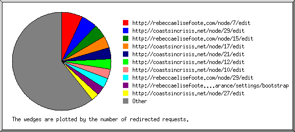
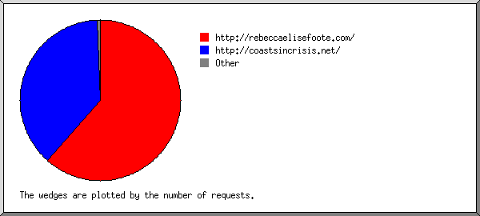
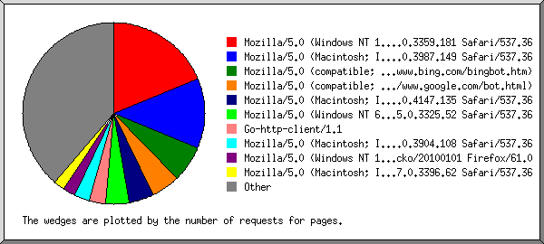
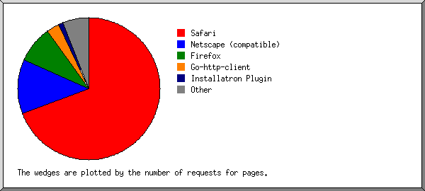
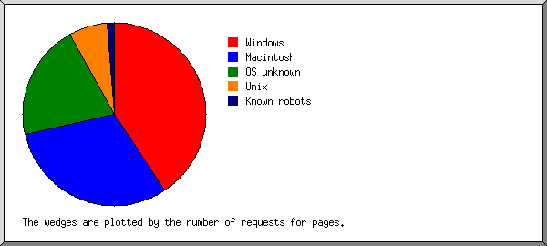
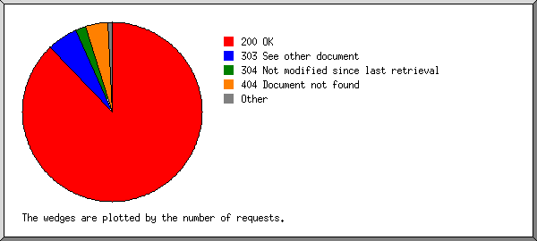
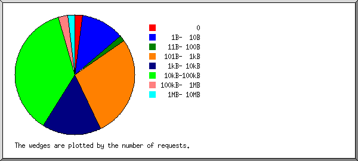
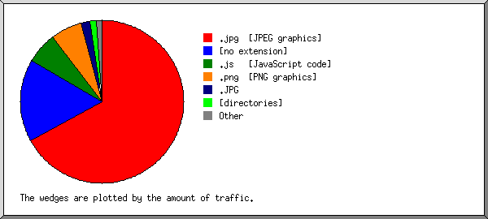
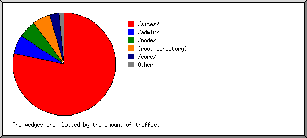

Web Server Statistics for rebeccaelisefoote.com
Web Server Statistics for rebeccaelisefoote.com
Program started on Sat, Feb 29 2020 at 12:51 PM.
Analyzed requests from Fri, Jan 31 2020 at 12:05 PM to Sat, Feb 29 2020 at 4:32 AM (28.69 days).
Web Server Statistics for rebeccaelisefoote.comProgram started on Sat, Feb 29 2020 at 12:51 PM.
Analyzed requests from Fri, Jan 31 2020 at 12:05 PM to Sat, Feb 29 2020 at 4:32 AM (28.69 days).
(Go To: Top | General Summary | Monthly Report | Daily Summary | Hourly Summary | Domain Report | Organization Report | Redirected Referrer Report | Failed Referrer Report | Referring Site Report | Browser Report | Browser Summary | Operating System Report | Status Code Report | File Size Report | File Type Report | Directory Report | Request Report)
Figures in parentheses refer to the 7-day period ending Feb 29 2020 at 12:51 PM.
Successful requests: 684 (373)
Average successful requests per day: 23 (53)
Successful requests for pages: 162 (23)
Average successful requests for pages per day: 5 (3)
Failed requests: 91 (0)
Redirected requests: 25 (0)
Requests with informational status code: 1 (0)
Distinct files requested: 258 (298)
Distinct hosts served: 110 (119)
Data transferred: 18.21 megabytes (8.23 megabytes)
Average data transferred per day: 649.97 kilobytes (1.18 megabytes)
(Go To: Top | General Summary | Monthly Report | Daily Summary | Hourly Summary | Domain Report | Organization Report | Redirected Referrer Report | Failed Referrer Report | Referring Site Report | Browser Report | Browser Summary | Operating System Report | Status Code Report | File Size Report | File Type Report | Directory Report | Request Report)
Each unit ( ) represents 4 requests for pages or part thereof.
) represents 4 requests for pages or part thereof.
| month | #reqs | #pages | |
|---|---|---|---|
| Jan 2020 | 40 | 8 |  |
| Feb 2020 | 643 | 153 |   |
Busiest month: Feb 2020 (153 requests for pages).
(Go To: Top | General Summary | Monthly Report | Daily Summary | Hourly Summary | Domain Report | Organization Report | Redirected Referrer Report | Failed Referrer Report | Referring Site Report | Browser Report | Browser Summary | Operating System Report | Status Code Report | File Size Report | File Type Report | Directory Report | Request Report)
Each unit () represents 1 request for a page.
| day | #reqs | #pages | |
|---|---|---|---|
| Sun | 64 | 37 | |
| Mon | 30 | 20 |  |
| Tue | 176 | 21 | |
| Wed | 201 | 12 |  |
| Thu | 43 | 17 | |
| Fri | 121 | 29 | |
| Sat | 48 | 25 | |
(Go To: Top | General Summary | Monthly Report | Daily Summary | Hourly Summary | Domain Report | Organization Report | Redirected Referrer Report | Failed Referrer Report | Referring Site Report | Browser Report | Browser Summary | Operating System Report | Status Code Report | File Size Report | File Type Report | Directory Report | Request Report)
Each unit () represents 1 request for a page.
| hour | #reqs | #pages | |
|---|---|---|---|
| 0 | 63 | 6 | |
| 1 | 26 | 8 | |
| 2 | 139 | 16 | |
| 3 | 16 | 8 | |
| 4 | 6 | 6 | |
| 5 | 2 | 2 | |
| 6 | 11 | 6 | |
| 7 | 5 | 5 | |
| 8 | 5 | 5 | |
| 9 | 16 | 10 | |
| 10 | 2 | 2 | |
| 11 | 3 | 3 | |
| 12 | 53 | 12 | |
| 13 | 20 | 8 | |
| 14 | 1 | 1 | |
| 15 | 4 | 4 | |
| 16 | 63 | 8 | |
| 17 | 18 | 6 | |
| 18 | 6 | 6 | |
| 19 | 7 | 6 | |
| 20 | 7 | 2 | |
| 21 | 14 | 7 | |
| 22 | 72 | 15 | |
| 23 | 124 | 9 | |
(Go To: Top | General Summary | Monthly Report | Daily Summary | Hourly Summary | Domain Report | Organization Report | Redirected Referrer Report | Failed Referrer Report | Referring Site Report | Browser Report | Browser Summary | Operating System Report | Status Code Report | File Size Report | File Type Report | Directory Report | Request Report)
Listing domains, sorted by the amount of traffic.
| #reqs | %bytes | domain |
|---|---|---|
| 684 | 100% | [unresolved numerical addresses] |
(Go To: Top | General Summary | Monthly Report | Daily Summary | Hourly Summary | Domain Report | Organization Report | Redirected Referrer Report | Failed Referrer Report | Referring Site Report | Browser Report | Browser Summary | Operating System Report | Status Code Report | File Size Report | File Type Report | Directory Report | Request Report)

Listing the top 20 organizations by the number of requests, sorted by the number of requests.
| #reqs | %bytes | organization |
|---|---|---|
| 286 | 40.45% | 75 |
| 106 | 2.26% | 138.68 |
| 63 | 12.53% | 66.249 |
| 22 | 3.31% | 54 |
| 21 | 3.59% | 66.102 |
| 16 | 6.49% | 13 |
| 16 | 0.30% | 69 |
| 15 | 0.21% | 34 |
| 14 | 6.19% | 199.111 |
| 11 | 3.14% | 18 |
| 9 | 2.46% | 35 |
| 8 | 3.11% | 42 |
| 8 | 3.11% | 3 |
| 7 | 3.09% | 180.163 |
| 7 | 2.44% | 211.95 |
| 6 | 2.43% | 198.240 |
| 6 | 0.10% | 73 |
| 6 | 0.07% | 40 |
| 5 | 2.32% | 171.13 |
| 5 | 0.06% | 93 |
| 47 | 2.33% | [not listed: 25 organizations] |
(Go To: Top | General Summary | Monthly Report | Daily Summary | Hourly Summary | Domain Report | Organization Report | Redirected Referrer Report | Failed Referrer Report | Referring Site Report | Browser Report | Browser Summary | Operating System Report | Status Code Report | File Size Report | File Type Report | Directory Report | Request Report)

Listing referring URLs, sorted by the number of redirected requests.
(Go To: Top | General Summary | Monthly Report | Daily Summary | Hourly Summary | Domain Report | Organization Report | Redirected Referrer Report | Failed Referrer Report | Referring Site Report | Browser Report | Browser Summary | Operating System Report | Status Code Report | File Size Report | File Type Report | Directory Report | Request Report)

Listing referring URLs, sorted by the number of failed requests.
| #reqs | URL |
|---|---|
| 4 | http://rebeccaelisefoote.com/wp-login.php |
| 3 | http://rebeccaelisefoote.com/administrator/ |
| 2 | http://rebeccaelisefoote.com/ |
(Go To: Top | General Summary | Monthly Report | Daily Summary | Hourly Summary | Domain Report | Organization Report | Redirected Referrer Report | Failed Referrer Report | Referring Site Report | Browser Report | Browser Summary | Operating System Report | Status Code Report | File Size Report | File Type Report | Directory Report | Request Report)

Listing referring sites, sorted by the number of requests.
| #reqs | site |
|---|---|
| 409 | http://rebeccaelisefoote.com/ |
| 6 | http://www.rebeccaelisefoote.com/ |
| 3 | https://cpanel.x.reclaimhosting.com/ |
| 2 | http://baidu.com/ |
(Go To: Top | General Summary | Monthly Report | Daily Summary | Hourly Summary | Domain Report | Organization Report | Redirected Referrer Report | Failed Referrer Report | Referring Site Report | Browser Report | Browser Summary | Operating System Report | Status Code Report | File Size Report | File Type Report | Directory Report | Request Report)

Listing the top 40 browsers by the number of requests for pages, sorted by the number of requests for pages.
| #reqs | #pages | browser |
|---|---|---|
| 36 | 36 | Mozilla/5.0 (compatible; Googlebot/2.1; +http://www.google.com/bot.html) |
| 29 | 29 | Mozilla/5.0 (Windows NT 10.0; Win64; x64)AppleWebKit/537.36 (KHTML, like Gecko) Chrome/66.0.3359.181 Safari/537.36 |
| 7 | 7 | Mozilla/5.0 (X11; Linux x86_64) AppleWebKit/537.36 (KHTML, like Gecko) Chrome/65.0.3325.181 Safari/537.36 |
| 13 | 6 | Go-http-client/1.1 |
| 6 | 6 | Mozilla/5.0 (compatible; bingbot/2.0; +http://www.bing.com/bingbot.htm) |
| 6 | 6 | Mozilla/5.0 (Windows NT 6.1; WOW64) AppleWebKit/534.24 (KHTML, like Gecko) Chrome/11.0.696.71 Safari/534.24 |
| 5 | 5 | Mozilla/5.0 (Windows NT 10.0; Win64; x64) AppleWebKit/537.36 (KHTML, like Gecko) Chrome/74.0.3729.169 Safari/537.36 |
| 7 | 3 | Installatron Plugin/9.1.49 |
| 21 | 3 | Mozilla/5.0 (X11; Linux x86_64) AppleWebKit/537.36 (KHTML, like Gecko) Chrome/78.0.3904.87 Safari/537.36 |
| 300 | 3 | Mozilla/5.0 (Macintosh; Intel Mac OS X 10_15_1) AppleWebKit/537.36 (KHTML, like Gecko) Chrome/78.0.3904.108 Safari/537.36 |
| 2 | 2 | Mozilla/5.0 (Windows NT 6.1; WOW64) AppleWebKit/537.36 (KHTML, like Gecko) Chrome/76.0.2171.71 Safari/537.36 |
| 2 | 2 | PycURL/7.43.0.3 libcurl/7.47.0 OpenSSL/1.0.2g zlib/1.2.8 libidn/1.32 librtmp/2.3 |
| 2 | 2 | Mozilla/5.0 (Macintosh; Intel Mac OS X 10_15_2) AppleWebKit/537.36 (KHTML, like Gecko) Chrome/79.0.3945.117 Safari/537.36 |
| 2 | 2 | Mozilla/5.0 (Windows NT 6.1; WOW64) AppleWebKit/537.36 (KHTML, like Gecko) Chrome/59.0.3071.115 Safari/537.36 |
| 2 | 2 | Mozilla/5.0 (Windows NT 6.3; Win64; x64; rv:63.0) Gecko/20100101 Firefox/63.0 |
| 2 | 2 | Mozilla/5.1 (Windows NT 6.1; WOW64; rv:36.0) Gecko/20100101 Firefox/36.0 |
| 3 | 2 | Mozilla/5.0 (Windows NT 6.1; WOW64) AppleWebKit/537.36 (KHTML, like Gecko) Chrome/65.0.3325.52 Safari/537.36 |
| 2 | 2 | msnbot/2.0b (+http://search.msn.com/msnbot.htm) |
| 14 | 2 | Mozilla/5.0 (Linux; U; Android 8.1.0; zh-CN; EML-AL00 Build/HUAWEIEML-AL00) AppleWebKit/537.36 (KHTML, like Gecko) Version/4.0 Chrome/57.0.2987.108 baidu.sogo.uc.UCBrowser/11.9.4.974 UWS/2.13.1.48 Mobile Safari/537.36 AliApp(DingTalk/4.5.11) com.alibaba.android.rimet/10487439 Channel/227200 language/zh-CN |
| 7 | 2 | Mozilla/5.0 (Macintosh; Intel Mac OS X 10_13_6) AppleWebKit/537.36 (KHTML, like Gecko) Chrome/75.0.3770.100 Safari/537.36 |
| 9 | 2 | CheckMarkNetwork/1.0 (+http://www.checkmarknetwork.com/spider.html) |
| 20 | 2 | Mozilla/5.0 (Windows NT 10.0; Win64; x64) AppleWebKit/537.36 (KHTML, like Gecko) Chrome/79.0.3945.130 Safari/537.36 |
| 14 | 2 | Mozilla/5.0 AppleWebKit/536.30.1 (KHTML, like Gecko) Version/6.0.5 Safari/536.30.1 Installatron (Mimicking WebKit) |
| 2 | 2 | Mozilla/5.0 (Windows NT 10.0; Win64; x64) AppleWebKit/537.36 (KHTML, like Gecko) Chrome/72.0.3626.119 Safari/537.36 |
| 2 | 2 | Mozilla/5.0 (Windows NT 10.0; Win64; x64) AppleWebKit/537.36 (KHTML, like Gecko) Chrome/76.0.3809.132 Safari/537.36 |
| 2 | 2 | Mozilla/5.0 (Linux; Android 6.0.1; Nexus 5X Build/MMB29P) AppleWebKit/537.36 (KHTML, like Gecko) Chrome/41.0.2272.96 Mobile Safari/537.36 (compatible; Googlebot/2.1; +http://www.google.com/bot.html) |
| 81 | 2 | Mozilla/5.0 (Windows NT 6.1; WOW64; rv:17.0) Gecko/20100101 Firefox/17.0 |
| 1 | 1 | Mozilla/5.0 (X11; Ubuntu; Linux x86_64; rv:68.0) Gecko/20100101 Firefox/68.0 |
| 1 | 1 | Mozilla/5.0 (Windows NT 10.0; WOW64; Trident/7.0; rv:11.0) like Gecko/20100101 Firefox/12.0 |
| 1 | 1 | Mozilla/4.0 (compatible; MSIE 8.0; Windows NT 6.0) |
| 1 | 1 | python-requests/2.21.0 |
| 1 | 1 | Mozilla/5.0 (Windows NT 6.1; WOW64) AppleWebKit/537.1 (KHTML, like Gecko) Chrome/21.0.1180.89 Safari/537.1 |
| 1 | 1 | Mozilla/5.0 (Macintosh; PPC Mac OS X 10.9; rv:47.0) Gecko/20100101 Firefox/47.0 |
| 1 | 1 | Mozilla/5.0 (Windows NT 10.0; Win64; x64) AppleWebKit/537.36 (KHTML, like Gecko; compatible; BuiltWith/1.0; +http://builtwith.com/biup) Chrome/74.0.3729.131 Safari/537.36 |
| 1 | 1 | Mozilla |
| 1 | 1 | Pandalytics/1.0 (https://domainsbot.com/pandalytics/) |
| 1 | 1 | Mozilla/5.0 (Windows NT 10.0; Win64; x64) AppleWebKit/537.36 (KHTML, like Gecko) Chrome/57.0.2987.133 Safari/537.36 |
| 5 | 1 | Mozilla/5.0 (iPhone; CPU iPhone OS 11_0 like Mac OS X) AppleWebKit/604.1.38 (KHTML, like Gecko) Version/11.0 Mobile/15A372 Safari/604.1 |
| 1 | 1 | Mozilla/5.0 (Macintosh; PPC Mac OS X 10.12; rv:55.0) Gecko/20100101 Firefox/55.0 |
| 1 | 1 | Mozilla/5.0 (Windows NT 6.1; Win64; x64; rv:55.0) Gecko/20100101 Firefox/55.0 |
| 69 | 11 | [not listed: 14 browsers] |
(Go To: Top | General Summary | Monthly Report | Daily Summary | Hourly Summary | Domain Report | Organization Report | Redirected Referrer Report | Failed Referrer Report | Referring Site Report | Browser Report | Browser Summary | Operating System Report | Status Code Report | File Size Report | File Type Report | Directory Report | Request Report)

Listing browsers with at least 1 request for a page, sorted by the number of requests for pages.
| # | #reqs | #pages | browser |
|---|---|---|---|
| 1 | 492 | 85 | Safari |
| 459 | 74 | Safari/537 | |
| 6 | 6 | Safari/534 | |
| 14 | 2 | Safari/536 | |
| 12 | 2 | Safari/604 | |
| 1 | 1 | Safari/9537 | |
| 2 | 55 | 42 | Netscape (compatible) |
| 3 | 99 | 15 | Firefox |
| 81 | 2 | Firefox/17 | |
| 2 | 2 | Firefox/63 | |
| 2 | 2 | Firefox/36 | |
| 2 | 2 | Firefox/55 | |
| 1 | 1 | Firefox/12 | |
| 1 | 1 | Firefox/21 | |
| 1 | 1 | Firefox/71 | |
| 1 | 1 | Firefox/47 | |
| 6 | 1 | Firefox/57 | |
| 1 | 1 | Firefox/59 | |
| 4 | 13 | 6 | Go-http-client |
| 13 | 6 | Go-http-client/1 | |
| 5 | 7 | 3 | Installatron Plugin |
| 7 | 3 | Installatron Plugin/9 | |
| 6 | 2 | 2 | msnbot |
| 2 | 2 | msnbot/2 | |
| 7 | 9 | 2 | CheckMarkNetwork |
| 9 | 2 | CheckMarkNetwork/1 | |
| 8 | 2 | 2 | MSIE |
| 1 | 1 | MSIE/8 | |
| 9 | 2 | 2 | PycURL |
| 2 | 2 | PycURL/7 | |
| 10 | 1 | 1 | Netscape |
| 11 | 1 | 1 | python-requests |
| 1 | 1 | python-requests/2 | |
| 12 | 1 | 1 | Pandalytics |
| 1 | 1 | Pandalytics/1 |
(Go To: Top | General Summary | Monthly Report | Daily Summary | Hourly Summary | Domain Report | Organization Report | Redirected Referrer Report | Failed Referrer Report | Referring Site Report | Browser Report | Browser Summary | Operating System Report | Status Code Report | File Size Report | File Type Report | Directory Report | Request Report)

Listing operating systems, sorted by the number of requests for pages.
| # | #reqs | #pages | OS |
|---|---|---|---|
| 1 | 178 | 69 | Windows |
| 76 | 47 | Windows NT | |
| 102 | 22 | Unknown Windows | |
| 2 | 113 | 58 | OS unknown |
| 3 | 57 | 18 | Unix |
| 57 | 18 | Linux | |
| 4 | 325 | 13 | Macintosh |
| 5 | 11 | 4 | Known robots |
(Go To: Top | General Summary | Monthly Report | Daily Summary | Hourly Summary | Domain Report | Organization Report | Redirected Referrer Report | Failed Referrer Report | Referring Site Report | Browser Report | Browser Summary | Operating System Report | Status Code Report | File Size Report | File Type Report | Directory Report | Request Report)

Listing status codes, sorted numerically.
| #reqs | status code |
|---|---|
| 1 | 101 Switching protocols |
| 684 | 200 OK |
| 3 | 301 Document moved permanently |
| 16 | 302 Document found elsewhere |
| 6 | 303 See other document |
| 91 | 404 Document not found |
(Go To: Top | General Summary | Monthly Report | Daily Summary | Hourly Summary | Domain Report | Organization Report | Redirected Referrer Report | Failed Referrer Report | Referring Site Report | Browser Report | Browser Summary | Operating System Report | Status Code Report | File Size Report | File Type Report | Directory Report | Request Report)

| size | #reqs | %bytes |
|---|---|---|
| 0 | 2 | |
| 1B- 10B | 0 | |
| 11B- 100B | 21 | 0.01% |
| 101B- 1kB | 177 | 0.39% |
| 1kB- 10kB | 205 | 3.10% |
| 10kB-100kB | 217 | 36.12% |
| 100kB- 1MB | 62 | 60.38% |
(Go To: Top | General Summary | Monthly Report | Daily Summary | Hourly Summary | Domain Report | Organization Report | Redirected Referrer Report | Failed Referrer Report | Referring Site Report | Browser Report | Browser Summary | Operating System Report | Status Code Report | File Size Report | File Type Report | Directory Report | Request Report)

Listing extensions with at least 0.1% of the traffic, sorted by the amount of traffic.
| #reqs | %bytes | extension |
|---|---|---|
| 100 | 48.74% | .js [JavaScript code] |
| 134 | 19.83% | [no extension] |
| 104 | 11.19% | .svg |
| 27 | 7.88% | .png [PNG graphics] |
| 71 | 7.72% | .css [Cascading Style Sheets] |
| 162 | 2.63% | [directories] |
| 83 | 1.98% | .php [PHP] |
| 3 | 0.04% | [not listed: 2 extensions] |
(Go To: Top | General Summary | Monthly Report | Daily Summary | Hourly Summary | Domain Report | Organization Report | Redirected Referrer Report | Failed Referrer Report | Referring Site Report | Browser Report | Browser Summary | Operating System Report | Status Code Report | File Size Report | File Type Report | Directory Report | Request Report)

Listing directories with at least 0.01% of the traffic, sorted by the amount of traffic.
| #reqs | %bytes | directory |
|---|---|---|
| 94 | 46.55% | /static/ |
| 76 | 16.23% | /admin/ |
| 180 | 13.44% | [root directory] |
| 70 | 12.81% | /sites/ |
| 151 | 6.11% | /core/ |
| 18 | 2.17% | /user/ |
| 54 | 1.31% | /coasts/ |
| 4 | 0.59% | /search/ |
| 5 | 0.50% | /node/ |
| 1 | 0.12% | /toolbar/ |
| 3 | 0.11% | /themes/ |
| 8 | 0.05% | /contextual/ |
| 20 | 0.01% | [not listed: 1 directory] |
(Go To: Top | General Summary | Monthly Report | Daily Summary | Hourly Summary | Domain Report | Organization Report | Redirected Referrer Report | Failed Referrer Report | Referring Site Report | Browser Report | Browser Summary | Operating System Report | Status Code Report | File Size Report | File Type Report | Directory Report | Request Report)

Listing files with at least 20 requests, sorted by the number of requests.
| #reqs | %bytes | last time | file |
|---|---|---|---|
| 157 | 2.37% | Feb/29/20 4:32 AM | / |
| 15 | 0.31% | Feb/29/20 4:32 AM | /?211.95.50.7 |
| 41 | 0.98% | Feb/21/20 4:27 PM | /coasts/core/install.php |
| 32 | 0.03% | Feb/21/20 4:27 PM | /coasts/core/install.php?langcode=en&profile=standard&continue=1&id=1&op=do&_format=json&rewrite=ok |
| 38 | 0.95% | Feb/25/20 10:39 PM | /core/install.php |
| 29 | 0.02% | Feb/25/20 10:39 PM | /core/install.php?langcode=en&profile=standard&continue=1&id=1&op=do&_format=json&rewrite=ok |
| 22 | 31.43% | Feb/25/20 10:26 PM | /static/js/vendor.e3b4d55d5d4190c287be.js |
| 21 | 0.09% | Feb/24/20 12:42 PM | /static/js/manifest.37a2ecbb1d1b7e6c9ada.js |
| 21 | 2.30% | Feb/25/20 10:26 PM | /static/js/app.fbb5249294be1383cfa2.js |
| 20 | 6.04% | Feb/25/20 10:26 PM | /static/css/app.b27e2e483e45f759c0abf0be1c52cd1d.css |
| 364 | 55.83% | Feb/27/20 7:30 PM | [not listed: 229 files] |